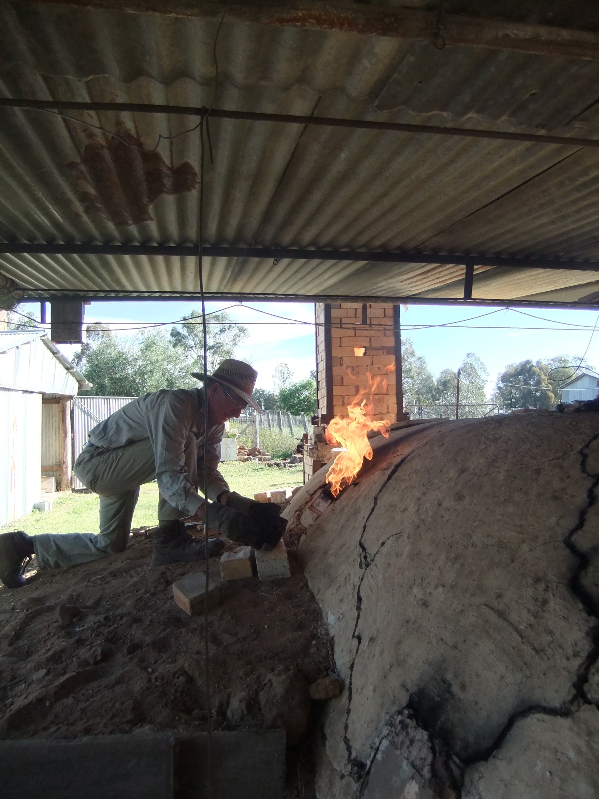

Background

Geoff is a sheep, cattle and wheat farmer from north-western NSW. In addition to this he produces beautifull woodfired pottery, primarily in his japanese-style anagama tunnel kiln.
While Geoff primarily makes pots as a hobby he is very well respected in the woodfiring community and has held a number of successfull exhibitions. Previously it has only been possible to purchase his work at galleries for a substantial markup, but with this website we are offering you a chance to purchase unique handmade and woodfired pieces for your home